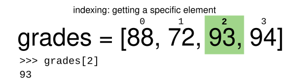
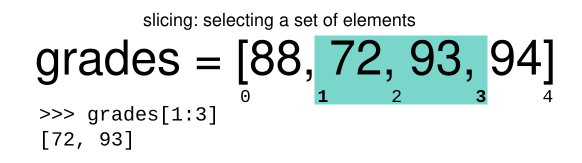

Indexing, Slicing and Subsetting DataFrames in Python
Last updated on 2024-02-13 | Edit this page
Overview
Questions
- How can I access specific data within my data set?
- How can Python and Pandas help me to analyse my data?
Objectives
- Describe what 0-based indexing is.
- Manipulate and extract data using column headings and index locations.
- Employ slicing to select sets of data from a DataFrame.
- Employ label and integer-based indexing to select ranges of data in a dataframe.
- Reassign values within subsets of a DataFrame.
- Create a copy of a DataFrame.
- Query /select a subset of data using a set of criteria using the following operators: =, !=, >, <, >=, <=.
- Locate subsets of data using masks.
- Describe BOOLEAN objects in Python and manipulate data using BOOLEANs.
In lesson 01, we read a CSV into a Python pandas DataFrame. We learned:
- how to save the DataFrame to a named object,
- how to perform basic math on the data,
- how to calculate summary statistics, and
- how to create plots of the data.
In this lesson, we will explore ways to access different parts of the data using:
- indexing,
- slicing, and
- subsetting.
Loading our data
We will continue to use the surveys dataset that we worked with in the last lesson. Let’s reopen and read in the data again:
Indexing and Slicing in Python
We often want to work with subsets of a DataFrame object. There are different ways to accomplish this including: using labels (column headings), numeric ranges, or specific x,y index locations.
Selecting data using Labels (Column Headings)
We use square brackets [] to select a subset of an
Python object. For example, we can select all data from a column named
species_id from the surveys_df DataFrame by
name. There are two ways to do this:
PYTHON
# Method 1: select a 'subset' of the data using the column name
eebo_df['Place']
# Method 2: use the column name as an 'attribute'; gives the same output
eebo_df.PlaceWe can also create a new object that contains only the data within
the Status column as follows:
PYTHON
# creates an object, texts_species, that only contains the `status_id` column
texts_status = eebo_df['Status']We can pass a list of column names too, as an index to select columns in that order. This is useful when we need to reorganize our data.
NOTE: If a column name is not contained in the DataFrame, an exception (error) will be raised.
Extracting Range based Subsets: Slicing
REMINDER: Python Uses 0-based Indexing
Let’s remind ourselves that Python uses 0-based indexing. This means that the first element in an object is located at position 0. This is different from other tools like R and Matlab that index elements within objects starting at 1.


Slicing Subsets of Rows in Python
Slicing using the [] operator selects a set of rows
and/or columns from a DataFrame. To slice out a set of rows, you use the
following syntax: data[start:stop]. When slicing in pandas
the start bound is included in the output. The stop bound is one step
BEYOND the row you want to select. So if you want to select rows 0, 1
and 2 your code would look like this:
The stop bound in Python is different from what you might be used to in languages like Matlab and R.
PYTHON
# select the first 5 rows (rows 0, 1, 2, 3, 4)
eebo_df[:5]
# select the last element in the list
# (the slice starts at the last element,
# and ends at the end of the list)
eebo_df[-1:]We can also reassign values within subsets of our DataFrame.
But before we do that, let’s look at the difference between the concept of copying objects and the concept of referencing objects in Python.
Copying Objects vs Referencing Objects in Python
Let’s start with an example:
PYTHON
# using the 'copy() method'
true_copy_eebo_df = eebo_df.copy()
# using '=' operator
ref_eebo_df = eebo_dfYou might think that the code ref_eebo_df = eebo_df
creates a fresh distinct copy of the surveys_df DataFrame
object. However, using the = operator in the simple
statement y = x does not create a copy of
our DataFrame. Instead, y = x creates a new variable
y that references the same object that
x refers to. To state this another way, there is only
one object (the DataFrame), and both x and
y refer to it.
In contrast, the copy() method for a DataFrame creates a
true copy of the DataFrame.
Let’s look at what happens when we reassign the values within a subset of the DataFrame that references another DataFrame object:
# Assign the value `0` to the first three rows of data in the DataFrame
ref_eebo_df[0:3] = 0
```
Let's try the following code:
```
# ref_eebo_df was created using the '=' operator
ref_eebo_df.head()
# surveys_df is the original dataframe
eebo_df.head()What is the difference between these two dataframes?
When we assigned the first 3 columns the value of 0
using the ref_surveys_df DataFrame, the
surveys_df DataFrame is modified too. Remember we created
the reference ref_survey_df object above when we did
ref_survey_df = surveys_df. Remember
surveys_df and ref_surveys_df refer to the
same exact DataFrame object. If either one changes the object, the other
will see the same changes to the reference object.
To review and recap:
-
Copy uses the dataframe’s
copy()methodtrue_copy_eebo_df = eebo_df.copy() -
A Reference is created using the
=operator
Okay, that’s enough of that. Let’s create a brand new clean dataframe from the original data CSV file.
Slicing Subsets of Rows and Columns in Python
We can select specific ranges of our data in both the row and column directions using either label or integer-based indexing. Columns can be selected either by their name, or by the index of their location in the dataframe. Rows can only be selected by their index.
-
locis primarily label based indexing. Integers may be used but they are interpreted as a label. -
ilocis primarily integer based indexing
To select a subset of rows and columns from our
DataFrame, we can use the iloc method. For example, we can
select month, day and year (columns 2, 3 and 4 if we start counting at
1), like this:
which gives the output
EEBO VID STC
0 99850634.0 15849 STC 1000.5; ESTC S115415
1 99842408.0 7058 STC 10000; ESTC S106695
2 99844302.0 9101 STC 10002; ESTC S108645Notice that we asked for a slice from 0:3. This yielded 3 rows of data. When you ask for 0:3, you are actually telling Python to start at index 0 and select rows 0, 1, 2 up to but not including 3.
Let’s explore some other ways to index and select subsets of data:
PYTHON
# select all columns for rows of index values 0 and 10
eebo_df.loc[[0, 10], :]
# what does this do?
eebo_df.loc[0, ['Author', 'Title', 'Status']]
# What happens when you type the code below?
eebo_df.loc[[0, 10, 149], :]NOTE: Labels must be found in the DataFrame or you
will get a KeyError.
Indexing by labels loc differs from indexing by integers
iloc. With iloc, the start bound and the stop
bound are inclusive. When using loc
instead, integers can also be used, but the integers refer to
the index label and not the position. For example, using
loc and select 1:4 will get a different result than using
iloc to select rows 1:4.
We can also select a specific data value using a row and column
location within the DataFrame and iloc indexing:
In this iloc example,
gives the output
'1528'Remember that Python indexing begins at 0. So, the index location [2, 6] selects the element that is 3 rows down and 7 columns over in the DataFrame.
Challenge - Range
- Given the three range indicies below, what do you expect to get back? Does it match what you actually get back?
eebo_df[0:1]eebo_df[:4]eebo_df[:-1]
Subsetting Data using Criteria
We can also select a subset of our data using criteria. For example, we can select all rows that have a status value of Free:
Which produces the following output:
PYTHON
TCP EEBO ... Page Count Place
23 A00156 99851064 ... 8 London
27 A00164 99851065 ... 7 London
113 A00426 99857357 ... 72 London
141 A00510 99852090 ... 48 London
[4 rows x 11 columns]Or we can select all rows with a page length greater than 100:
We can define sets of criteria too:
Python Syntax Cheat Sheet
Use can use the syntax below when querying data by criteria from a DataFrame. Experiment with selecting various subsets of the “surveys” data.
- Equals:
== - Not equals:
!= - Greater than, less than:
>or< - Greater than or equal to
>= - Less than or equal to
<=
Challenge - Advanced Queries
Select a subset of rows in the
eebo_dfDataFrame that contain data from the year 1540 and that contain page count values less than or equal to 8. How many rows did you end up with? What did your neighbor get?You can use the
isincommand in Python to query a DataFrame based upon a list of values as follows. Notice how the indexing relies on a reference to the dataframe being indexed. Think about the order in which the computer must evaluate these statements.
Use the isin function to find all books written by
Robert Aylett and Robert Aytoun. How many are there?
Experiment with other queries. Create a query that finds all rows with a Page Count value > or equal to 1.
The
~symbol in Python can be used to return the OPPOSITE of the selection that you specify in Python. It is equivalent to is not in. Write a query that selects all rows with Date NOT equal to 1500 or 1600 in the eebo data.
Using masks to identify a specific condition
A mask can be useful to locate where a particular
subset of values exist or don’t exist - for example, NaN, or “Not a
Number” values. To understand masks, we also need to understand
BOOLEAN objects in Python.
Boolean values include True or False. For
example,
When we ask Python what the value of x > 5 is, we get
False. This is because the condition,x is not
greater than 5, is not met since x is equal to 5.
To create a boolean mask:
- Set the True / False criteria
(e.g.
values > 5 = True) - Python will then assess each value in the object to determine whether the value meets the criteria (True) or not (False).
- Python creates an output object that is the same shape as the
original object, but with a
TrueorFalsevalue for each index location.
Let’s try this out. Let’s identify all locations in the survey data
that have null (missing or NaN) data values. We can use the
isnull method to do this. The isnull method
will compare each cell with a null value. If an element has a null
value, it will be assigned a value of True in the output
object.
A snippet of the output is below:
PYTHON
TCP EEBO VID STC Status Author Date Title Terms Pages
0 False False False False False False False False True False
1 False False False False False False False False False False
2 False False False False False False False False False False
3 False False False False False False False False False False
[149 rows x 11 columns]To select the rows where there are null values, we can use the mask as an index to subset our data as follows:
PYTHON
# To select just the rows with NaN values, we can use the 'any()' method
eebo_df[
pd.isnull(eebo_df).any(axis=1)
]Note that the weight column of our DataFrame contains
many null or NaN values. We will explore ways
of dealing with this in Lesson 03.
We can run isnull on a particular column too. What does
the code below do?
PYTHON
# what does this do?
empty_authors = eebo_df[
pd.isnull(eebo_df['Author'])
]['Author']
print(empty_authors)Let’s take a minute to look at the statement above. We are using the
Boolean object pd.isnull(eebo_df['Author']) as an index to
eebo_df. We are asking Python to select rows that have a
NaN value of author.
Challenge - Putting it all together
Create a new DataFrame that only contains titles with status values that are not from London. Assign each status value in the new DataFrame to a new value of ‘x’. Determine the number of null values in the subset.
Create a new DataFrame that contains only observations that are of status free and where page count values are greater than 100.